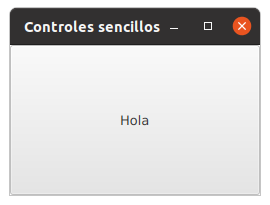
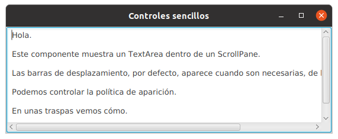
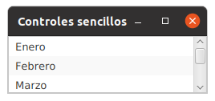
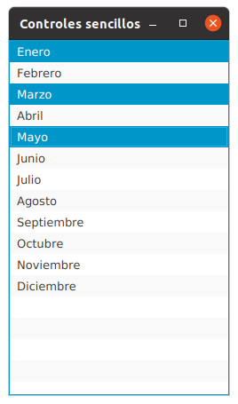
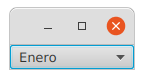

Ahora ya conocemos qué es el grafo de escena en JavaFX. También hemos visto cuál es el modelo de programación, basado en el patrón de diseño Observador/Observable. También hemos visto cómo debemos construir la arquitectura de la aplicación basándonos en el meta-patrón de diseño MVC.
Lo que vamos a ver en esta presentación son los controles más sencillos de programar.
Estos controles son sencillos, pero nos ofrecen una gran cantidad de posibilidades para trabajar con ellos.
Al último, tienes acceso desde la web de la biblioteca.
El botón más sencillo es un botón sin estado:
Button boton = new Button("Hola");
La cadena que se pasa como argumento en el constructor es el texto que aparece escrito sobre el botón.
El botón ocupa todo el área de la ventana.
Se comporta como un botón, pero al pulsarlo no hace nada.
¿Cómo detectamos la pulsación sobre el botón?
Necesitamos un escuchador, que es una clase que extiende a la clase EventHandler.
private class Escuchadora implements EventHandler<ActionEvent> {
@Override
public void handle(ActionEvent actionEvent) {
System.out.println("Me pulsaste.");
}
}
Fíjate que la interfaz EventHandler sólo tiene un método declarado.
Y una vez que lo tenemos, asignamos una instancia de esta clase a la propiedad correspondiente del botón.
boton.setOnAction(new Escuchadora());
Recuerda que no estamos asignando una escuchadora, con setOnAction(EventHandler) estmos seteando una propiedad del botón.
Si la clase escuchadora sólo la vamos a utilizar con un único botón, hay otro modo de hacerlo que no pasa por la creación explícita de una clase:
Button boton = new Button("Hola");
boton.setOnAction(new EventHandler<ActionEvent>() {
@Override
public void handle(ActionEvent actionEvent) {
System.out.println("Me pulsaste.");
}
});
Fíjate que parece que estamos instanciando una interfaz, pero lo que está ocurriendo realmente es que se está creando una nueva clase sin nombre que implementa la interfaz EventHandler.
A estas clases se les llama clases internas, anónimas.
Son internas porque se definen dentro de otras. Ya anónimas porque no tienen ningún nombre.
Además, con new la estamos instanciando en el momento de su definición.
Aún existe otra posibilidad para definir escuchadores.
Si recuerdas de la presentación de las novedades de Java 7 y 8, vimos que en Java 8 se introdujo la programación funcional en Java, lo que nos permite definir funciones que podemos enviar como parámetros en las llamadas a métodos. Ahora podemos hacer uso de esta técnica:
Button boton = new Button("Hola");
boton.setOnAction(actionEvent -> System.out.println("Me pulsaste"));
Compárala con:
boton.setOnAction(new EventHandler<ActionEvent>() {
@Override
public void handle(ActionEvent actionEvent) {
System.out.println("Me pulsaste.");
}
});
Esta es la opción recomendada en JavaFX.
Veamos ahora botones con estados. El primero es CheckBox:
CheckBox cafe = new CheckBox("Café.");
CheckBox cortado = new CheckBox("Cortado.");
CheckBox cafeConLeche = new CheckBox("Café con leche.");
VBox vBox = new VBox(cafe, cortado, cafeConLeche);
Cada uno de los botones puede estar seleccionado o no seleccionado.
Para conocer el estado actual el método isSelected() nos devuelve true o false.
Si nos interesa reaccionar ante la pulsación de uno de estos botones, lo podemos hacer igual que en el caso de los Button:
CheckBox cafe = new CheckBox("Café.");
cafe.setOnAction(e -> System.out.println("Seleccionaste café."));
CheckBox cortado = new CheckBox("Cortado.");
cortado.setOnAction(e -> System.out.println("Seleccionaste cortado"));
CheckBox cafeConLeche = new CheckBox("Café con leche.");
cafeConLeche.setOnAction(e -> System.out.println("Seleccionaste café con leche."));
Si lo que necesitamos es proporcionar al usuario la posibilidad de tener opciones excluyentes, podemos utilizar los RadioButton:
ToggleGroup grupo = new ToggleGroup();
RadioButton manyana = new RadioButton("Mañana.");
manyana.setOnAction(e -> System.out.println("Seleccionada opción mañana."));
RadioButton tarde = new RadioButton("Tarde.");
tarde.setOnAction(e -> System.out.println("Seleccionada opción tarde"));
RadioButton noche = new RadioButton("Noche.");
noche.setOnAction(e -> System.out.println("Seleccionada opción noche"));
manyana.setToggleGroup(grupo);
tarde.setToggleGroup(grupo);
noche.setToggleGroup(grupo);
Los botones son excluyentes porque se han añadido a un ToggleGroup con el método componente.setToggleGroup(ToggleGroup).
Si los botones no se añaden a un ToggleGroup, funcionan igual que los CheckBox.
Otro tipo de botones excluyentes son los ToggleButton. Si no los añades a un ToggleGroup funcionan como los CheckBox:
ToggleButton manyana = new ToggleButton("Mañana");
ToggleButton tarde = new ToggleButton("Tarde");
ToggleButton noche = new ToggleButton("Noche");
HBox hBox = new HBox(manyana, tarde, noche);
hBox.setSpacing(5);
Si los añades a un ToggleGroup son excluyentes
ToggleGroup grupo = new ToggleGroup();
ToggleButton manyana = new ToggleButton("Mañana");
manyana.setToggleGroup(grupo);
ToggleButton tarde = new ToggleButton("Tarde");
tarde.setToggleGroup(grupo);
ToggleButton noche = new ToggleButton("Noche");
noche.setToggleGroup(grupo);
La detección de botón presionado se hace como en los casos anteriores, con el método boton.setOnAction(EventHandler)
El componente de texto más sencillo es Label, con el que podemos mostrar un texto en la GUI que el usuario no puede modificar:
Label label = new Label("Pulsa en el botón: ");
Button boton = new Button("Hola");
HBox hBox = new HBox(label, boton);
hBox.setAlignment(Pos.BASELINE_CENTER);
El texto que se muestra en el Label se puede cambiar con el método setText(String).
Los distintos gestores de posicionamiento, como HBox y como usarlos lo veremos en las siguientes presentaciones.
Si lo que necesitas es un campo de texto que rellene el usuario, puedes utilizar el componente TextField:
String texto = "Texto introducido: ";
Label prompt = new Label("Introduce un texto: ");
TextField textField = new TextField();
Button aceptar = new Button("Aceptar");
HBox hBox = new HBox(prompt, textField, aceptar);
hBox.setAlignment(Pos.BASELINE_CENTER);
Label entrada = new Label(texto);
VBox vBox = new VBox(hBox, entrada);
aceptar.setOnAction(e -> entrada.setText(texto + textField.getText()));
Cada vez que pulsamos el botón Aceptar se lee el contenido del TextField con el método getText() y con el método setText(String) cambiamos el texto del TextField.
Por otro lado, si nos interesa deshabilitar un TextField para que el usuario no pueda introducir texto, lo podemos hacer con el método setDisable(boolean).
Este método sirve también para deshabilitar otros componentes.
El componente PasswordField funciona igual que el componente TextField pero el texto que el usuario introduce no se muestra en el componente:
Label labelUsuario = new Label("Usuario: ");
TextField usuario = new TextField("usuario");
HBox hUsuario = new HBox(labelUsuario, usuario);
hUsuario.setAlignment(Pos.BASELINE_CENTER);
Label labelClave = new Label("Clave: ");
PasswordField clave = new PasswordField();
HBox hClave = new HBox(labelClave, clave);
hClave.setAlignment(Pos.BASELINE_CENTER);
VBox vBox = new VBox(hUsuario, hClave);
La lectura del texto introducido por el usuario la puedes hacer con el método getText().
Si necesitas que el usurio introduzca varias líneas de texto puedes utilizar un TextArea:
Label label = new Label("Escribe un texto:");
TextArea textArea = new TextArea();
VBox vBox = new VBox(label, textArea);
Como en el caso de los componentes de texto anteriores, puedes leer el texto que hay escrito en la TextArea con el método getText(), y puedes escribir texto con el método setText(String).
Por defecto, el componentes TextArea no tiene barras de scroll, para poder mover el texto dentro de la zona visible si tenemos muchas líneas de texto.
Vamos a ver cómo hacer lo en la siguiente sección.
Los paneles con barras de desplazamiento pueden contener otros controles a los que añaden barras de desplazamiento.
Están programados siguiendo el patrón de diseño Decorator.
ScrollPane pane = new ScrollPane(new TextArea());
Aplicamos un panel con barras de scroll a un TextArea.
Por defecto, las barras de desplazamiento aparecen cuando son necesarias.
Podemos controlar la política de aparición de las barras de desplazamiento:
ScrollPane pane = new ScrollPane(new TextArea());
pane.setHbarPolicy(ScrollPane.ScrollBarPolicy.ALWAYS);
pane.setVbarPolicy(ScrollPane.ScrollBarPolicy.ALWAYS);
En esta caso estamos indicando que las barras de desplazamiento deben aparecer siempre.
Otras opciones de políticas disponibles son:
Las tres opciones son elementos de la enumeración ScrollPane.ScrollBarPolicy. Y, como hemos visto, se pueden asignar independientemente tanto a la horizontal como a la vertical con los métodos setHbarPolicy(modo) y setVbarPolicy(modo).
Para mostrar elementos en una lista, puedes utilizar el componente ListView:
ObservableList<String> meses = FXCollections.observableArrayList("Enero", "Febrero", "Marzo",
"Abril", "Mayo", "Junio", "Julio", "Agosto", "Septiembre", "Octubre",
"Noviembre", "Diciembre");
ListView lista = new ListView<>(meses);
Fíjate que los elementos de la lista deben estar dentro de una ObservableList.
También podemos añadir elementos a lista en nuestro código con el método add(elemento):
lista.getItems().add("Otro mes");
Si el espacio que ocupa la lista es mayor que el tamaño de la ventana, se añadirán barras de scroll de manera automática:
Por defecto sólo podemos seleccionar un único elemento de la lista.
Si queremos escuchar la selección de los elementos de la lista, el modelo de selección:
lista.getSelectionModel().selectedItemProperty().addListener((item,
valorInicial,
valorActual) -> {
System.out.println(valorInicial);
System.out.println(valorActual);
});
valorInicial es el valor del item antes de la selección, valorActual es el valor del item seleccionado.
El modo de selección lo podemos cambiar con:
lista.getSelectionModel().setSelectionMode(SelectionMode.MULTIPLE);
En este caso podrás seleccionar varios elementos, incluso salteados, de la lista:
Si lo que necesitamos es conocer, en cualquier momento, cuales son los item seleccionados, lo hacemos a través del MultipleSelectionModel que nos devuelve la ListView:
Button boton = new Button("Selección");
boton.setOnAction(e -> {
for (String mes: lista.getSelectionModel().getSelectedItems())
System.out.println(mes);
});
Mostrá por consola: Enero, Marzo y Mayo.
Como los elementos que se visualizan en la ListView están en una ObservableList<String>, si nos interesa, podemos registrar un escuchador a la ObservableList<String> para detectar si la lista se modifica:
meses.addListener((ListChangeListener<String>>) e -> {
e.next();
System.out.println("Hubo un cambio en la lista");
System.out.println(e.wasAdded());
System.out.println(e.wasRemoved());
});
Fíjate que lo primero que debes hacer es e.next().
Si ahora hacemos:
meses.add("Otro mes");
Lo que veremos por consola será:
Hubo un cambio en la lista
true
false
Otra opción para mostrar listas de elementos son los ComboBox:
ObservableList meses = FXCollections.observableArrayList("Enero", "Febrero", "Marzo",
"Abril", "Mayo", "Junio", "Julio", "Agosto", "Septiembre", "Octubre",
"Noviembre", "Diciembre");
ComboBox combo = new ComboBox<>(meses);
El modo de crear el ComboBox es el mismo que en el caso de ListView.
Pero el modo de detectar la selección es más sencillo que en el caso de la ListView:
combo.setOnAction(e -> System.out.println(combo.getSelectionModel()
.getSelectedItem()));
Mostrará por consola el nombre del mes seleccionado.
combo.setOnAction(e -> System.out.println(combo.getSelectionModel()
.getSelectedIndex()));
Mostrará por consola el índice del elemento seleccionado. El primer elemento está en el índice 0.
Como los elementos del ComboBox también están en una ObservableList<String> se puede observar si hay cambios en los elementos de la lista, igual que en el caso de la ListView.
En esta presentación hemos visto algunos de los componentes sencillos que nos proporciona JavaFX.
Hemos aplicado el modelo de programación para detectar los eventos que estos componentes lanzan cada vez que la persona usuaria interacciona con ellos.